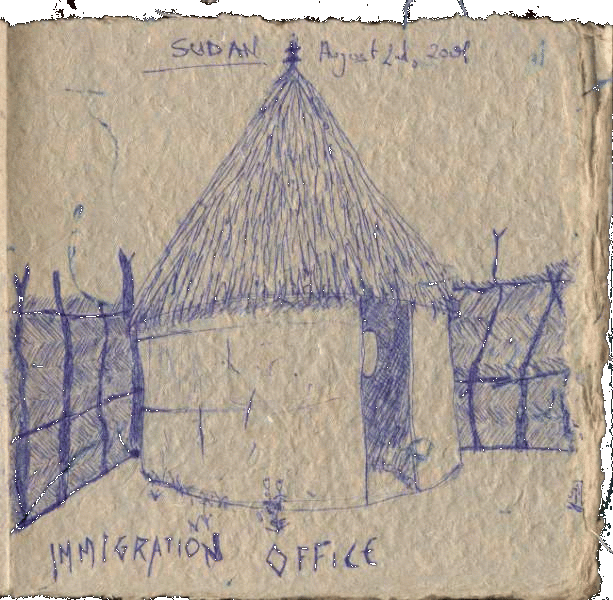

|
|
|
|
I just finished scraping off dried mud off my pants, just so I could get into the tent and type, and there is this really loud noise of donkeys and sheep that sound like they are fucking, but the problem is that there is only one female donkey in the area here.
I got into Sudan this morning I was really happy. I had to take care of some business first, especially I had to get rid of the weed I had left over before going through costums. For that I threw one lump away in the river, that I had imn my pocket, and the other I had to tell them the toilet story, and they believed me, so I went to the toilet and dumped it there. Other than that, the exit from Ethiopia was quite exciting: First immigration Ethiopia (the guy was about to not see my extended VISA and was about to give me some shit for it). In a hut, of course, or actually a mud house or hut. In metema there is no city: it's just a village, really. Then I cross the border on foot with Megnistaeb, who was still with me. First office is a police station, of some sort. They write me up in a notebook [There are now 2 little birds just about 2 feet from me, since they can't see me and are thus not scared. I am infact in the tent with the flysheet open, and mosquito net closed, so I can see them, but they can't see me] and tell me to go to costums. I do the costums thing (preceded by the fake crap) where they write me up in another, different book, always spelling my name in arabic. Then they take me to another office, I mean mudhut that is, which is supposed to be immigration, but it is yet another police or control station. They write me up in another book, and that's three by now. Finally, after waiting in there and chatting (it seemed like they wanted to have me hang out with them for a while so I haave a smoked a cigarette with them) I finally get to head towards the immigration office. Here I get written up in a book and get 3 stamps (finally) in my passport. Apparently I don't need to get the travel permits, or so they say, until I hit Khartoum at least.
I am happy to be here in Sudan, as much as I am happy to have left Ethiopia, also if the country has given me lots of good things. After all it cured me fromm Kenya's Pneumonia, it got me to meet some cool Italians in Moyale, Dan, Lalibela, Aksum, Gondar, more fu in Addis, and finally the ride on the Russian truck. But the urge to leave was getting to big. I have to get back home, and the long stay in Addis has really reinforced this feeling in me.
I feel this now too, that I am stuck here in Qualabit, because of rain. No rucks or vehicles left for Gedaref today. Nor have they, apparently, for the past 3 days. There is a long line of trucks here that want to leave but no traveller. Only me. I found some cool guy, who has some merchandise and has hired a truck with driver to take it to Gedaref for him. He was going to take me up in his truck. But then I heard of some Land Cruiser leaving tomorrow mornign at 8am. I am going to try to jump on that. After all I am missing a trip in a Land Cruiser, since the one in Aksum didn't really count, as it was more of an organizeed thing.
But as I was saying, I like Sudan already. The people seem nice, there are not too many leeches (the only one I have got was from Ethiopia), they don't have Injera (hurray! I couldn't stand it any longer, especially after throwing it up in the bus ride to Gondar), they have good bread, spiced coffee, a drink called ... I fogrot already, but it's soft drink, like Fanta, but it's Apple flavored, and most important of all, they have the shisha all over the place. Today I had one already. It was delicous. Apparently they import them here from Egypt. What a marvellous place.
Tonite I am staying atthe immigration place in my tent.
Went out for some change and found old man, the wise man of the village. We talked all nite. Offered me a drink (that apple drink) and took me for some good food (benz, beans with garlic and more).
Thought about Dan & Jeff.
| Previous | Home | Next |